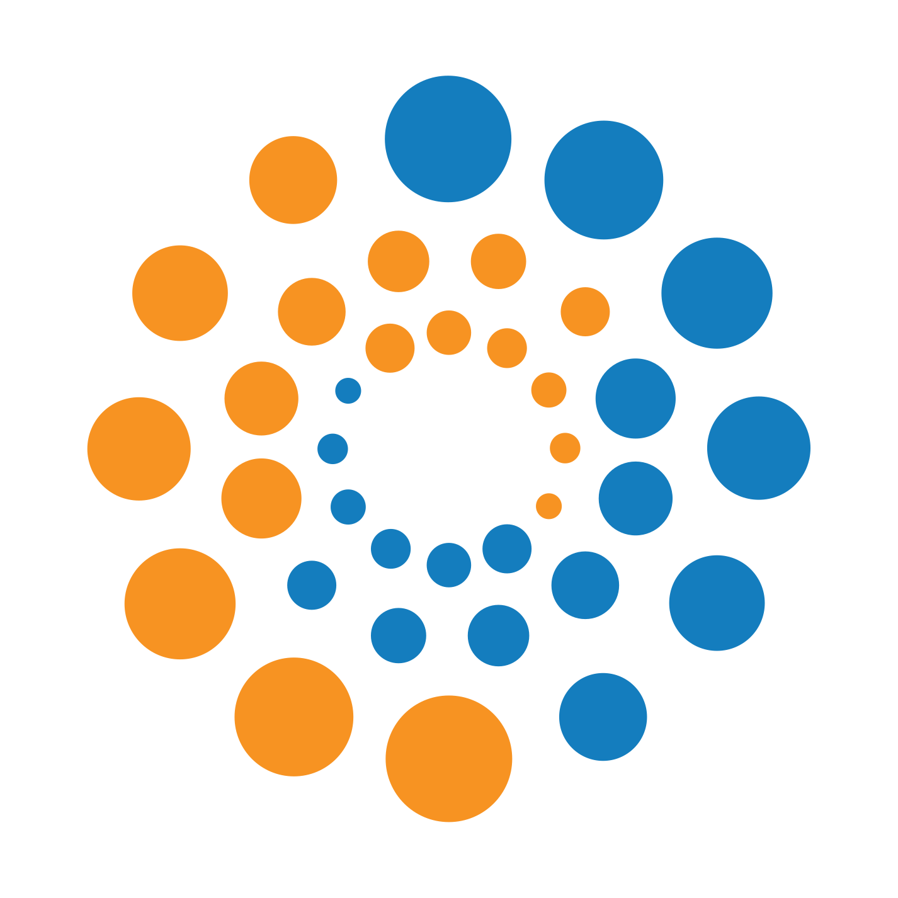

Programa de Pós-Graduação em Computação Aplicada - Instituto Nacional de Pesquisas Espaciais
Extensão em Computação Aplicada e Tecnologias Digitais
Uma disciplina prática para desenhar projetos de impacto educacional e social, e integrar ensino, pesquisa e extensão.

Sobre a disciplina
A disciplina Extensão em Computação Aplicada e Tecnologias Digitais oferece aos estudantes a oportunidade de aplicar conhecimentos da pós-graduação em atividades de extensão que conectam computação, ciência e sociedade. Por meio do planejamento e da execução de projetos extensionistas — como materiais educacionais, recursos digitais, oficinas ou ações de divulgação científica — os alunos desenvolvem competências de comunicação científica, trabalho interdisciplinar e mediação do conhecimento, contribuindo para ampliar o impacto social da produção científica do INPE.
Oferecida em todos os períodos letivos (CAP-511, CAP-512 e CAP-513), a disciplina prevê 15 horas/aula, distribuídas entre estudos sobre extensão, seminários temáticos e desenvolvimento de um projeto extensionista. A participação é presencial, com algumas atividades remotas síncronas e atividades extraclasses. A aprovação requer a elaboração de um projeto de extensão.
Cronograma (Primeiro Período de 2026)
| Dia | Atividade |
|---|---|
| 10/03/2026 | Aula de abertura. O que é extensão universitária? Por que devemos nos envolver?
Legislação: Resolução CNE/CES nº 7/2018, Extensão na Educação Superior Brasileira, Política Nacional de Extensão Universitária (PNExt). O que é XXXAASAS Exemplos de projetos. Como serão as entregas. |
| 17/03/2026 | Leituras sobre extensão universitária e discussão das modalidades (programas; projetos; cursos e
oficinas; eventos; prestação de serviços). Relatos de projetos de extensão universitária: Revista Ciência em Extensão, Revista Compartilhar, Revista “Extensão & Sociedade”, Revista Extensão em Foco, Revista Extensão em Debate, Revista Interagir... Exercício: usar uma ferramenta como Elicit.com para criar um relatório de casos de extensão em um domínio do conhecimento. |
| 24/03/2026 | Em Planejamento -- possivelmente apresentação de atividades extensionistas e oportunidades |
| 31/03/2026 | Em Planejamento -- possivelmente primeira interação do projeto de extensão |
| 07/04/2026 | |
| 14/04/2026 | |
| 21/04/2026 | Feriado Nacional (Tiradentes) |
| 28/04/2026 | |
| 05/05/2026 | |
| 12/05/2026 | |
| 19/05/2026 | |
| 26/05/2026 |
Exemplos de projetos
Temas gerais:
- Elaboração de roteiros de podcasts
- Entrevistas e produtos semelhantes para uso em divulgação
- Desenvolvimento de curso ou palestra online ou presencial
- Desenvolvimento de atividade didática
- Criação de objetos de ensino
- Desenvolvimento de jogos online ou físicos
- Desenvolvimento de passatempos com temática do INPE
- Desenvolvimento de material para engajamento da sociedade
- Projetos de Ciência Cidadã
- Projetos de ensino especializado com relevância social
- Criação de material de divulgação em geral
- Criação de arte temática reaproveitável
- Estudos para subsídio das atividades de extensão
- Participação em eventos de divulgação científica no INPE ou em instituições parceiras
Temas específicos para podcasts ou material de divulgação:
- Explicando supercomputação
- História da supercomputação
- História da previsão numérica do tempo
- Cartilha: Estudando no INPE
- (mais em breve!)
Importante: os projetos devem ser relevantes para o INPE ou para o programa, e devem ser aprovados pelo docente da disciplina.
Mais informações
Links: Catálogo de disciplinas da PGCAP • Página do programa no site gov.br • Calendário acadêmico • Informações gerais sobre a pós no INPE • Página do INPE no site gov.br
Contato: Rafael Santos